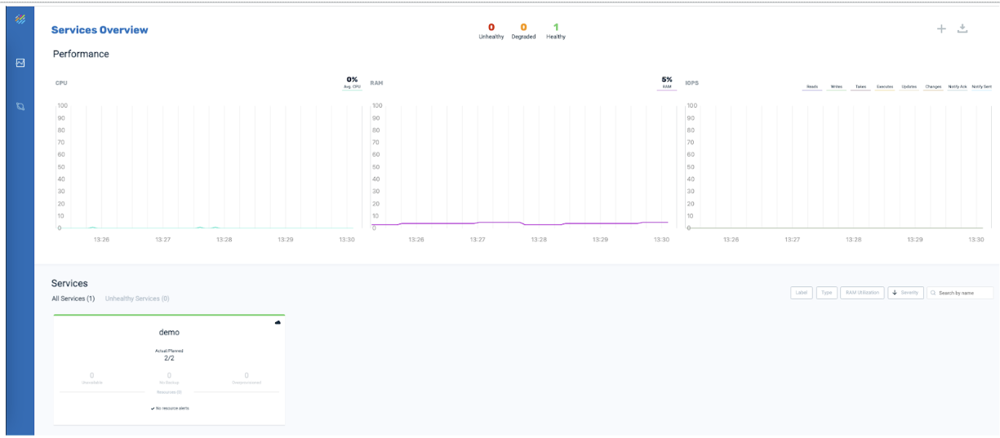
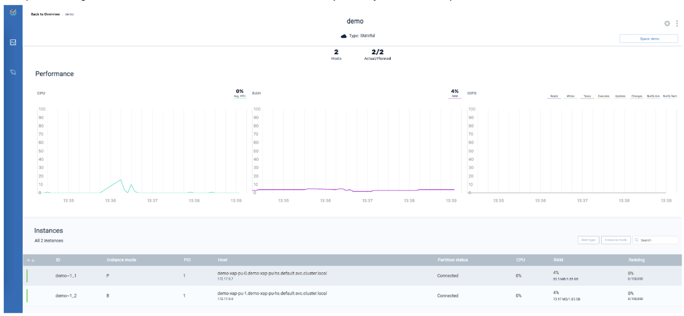

This topic describes how to customize a Space in a Kubernetes environment, by specifying multiple partitions, and by providing a backup partition (high availability option).
The topics in this section assume basic knowledge of the GigaSpaces platform. If you aren't familiar with GigaSpaces, review the contents of the general Getting Started section before performing the tasks described here.
Java SDK version 8 or 11
Maven 3.2.5 or higher
GigaSpaces
Perform installation of Helm charts, as described in
Helm charts xap and xap-pu are extracted
Performance of the Kubernetes environment can be improved by allocating multiple partitions for a Space.
The steps to allocate multiple partitions for a Space are shown below. This example allocates two partitions for the demo Space.
Install xap charts.
helm install xap ./xap/ --version=Wait for all pods to be ready.
Install the demo Space with two partitions.
helm install demo ./xap-pu/ --set manager.name=xap,partitions=2Enter the command kubectl get pods to see the result:
NAME READY STATUS RESTARTS AGE
demo-xap-pu-0 1/1 Running 0 44s
demo-xap-pu-1 1/1 Running 0 23s
xap-grafana-67d9b898b5-d5jn4 1/1 Running 0 2m27s
xap-influxdb-0 1/1 Running 0 2m27s
xap-operator-55c7997cd5-rt6bt 1/1 Running 0 2m27s
xap-xap-manager-0 1/1 Running 0 2m26sYou can also see the result in Ops Manager:

High availabilty deploys a backup partition that is in sync with the data in the primary partition. This eliminates downtime if the primary partition goes down, by seamlessly serving the same data from the backup.
When running in high availability mode, GigaSpaces combines backup partitions with anti-affinity rules to ensure that the space is intact in case a host or a zone (e.g. cloud availability zone) goes down. The GigaSpaces operator uses the anti-affinity pod level attribute to maintain high availability.
When a backup partition goes down, Kubernetes chooses to restart it on a new node according to the anti-affinity rules. In case of a primary partition malfunction, backup becomes primary and self healing is done in the same manner.
There are multiple options to define the topology of the anti-affinity rule. You can set up this option using the helm operator values.yaml file (under the antiAffinity.topology key):
topology.kubernetes.io/zone (default) - new backups are restarted in a different zone than the primary
topology.kubernetes.io/host - new backups are restarted in a different host (or virtual machine) than the primary.
Any other topology defined by Kubernetes spec
A Kubernetes cluster with multiple zones (can be cloud installation)
Gigaspaces helm charts xap and xap-pu pulled to a local repository (defined as TEST_REPO in this example)
Verify that your cluster nodes are labeled by zone (default in most cloud environments):
kubectl get nodes --show-labels
Result:
NAME STATUS ... LABELS
ip-10-41-1-154.ec2.internal Ready ... …,topology.kubernetes.io/zone=us-east-1a
ip-10-41-2-63.ec2.internal Ready ... …,topology.kubernetes.io/zone=us-east-1b
ip-10-41-3-77.ec2.internal Ready ... …,topology.kubernetes.io/zone=us-east-1cxap umbrella charthelm install xap TEST_REPO/xap/ --version=
--set operator.manager.name=xap
--set manager.metrics.enabled=false,metrics.enabled=false
--set manager.service.lrmi.enabled=false
get pods command kubectl get pods
Result:
NAME READY STATUS RESTARTS AGE
xap-operator-7b54b977f6-9znfd 1/1 Running 0 67s
ip-10-41-2-63.ec2.internal 1/1 Running 0 67s
helm install demo TEST_REPO/xap/ --version=
--set manager.name=xap
--set partitions=2,ha=true,antiAffinity.enabled=true
kubectl get pods -o wide
Result:
NAME ... IP NODE
demo-xap-pu-0 ... 10.41.1.147 ip-10-41-1-154.ec2.internal [zone us-east-1a]
demo-xap-pu-1 ... 10.41.2.113 ip-10-41-2-63.ec2.internal [zone us-east-1b]
demo-xap-pu-2 ... 10.41.3.142 ip-10-41-3-77.ec2.internal [zone us-east-1c]
demo-xap-pu-3 ... 10.41.2.97 ip-10-41-2-63.ec2.internal [zone us-east-1b]
Note that primary and backups are ordered in pairs and are in different zones:
demo-xap-pu-0 and demo-xap-pu-1 are primary/backup of the first partition and are in zones 1a and 1b
demo-xap-pu-2 and demo-xap-pu-3 are primary/backup of the second partition and are in zones 1c and 1b.
This example adds high availability to a Space called demo.
Undeploy the Space
helm delete demoInstall helm charts
helm install xap ./xap/ --version=16.1.1 --set manager.resources.limits.memory=700MiWait for all pods to be ready.
Install the Space with high availability turned on.
helm install demo ./xap-pu/ --set manager.name=xap,partitions=1,ha=trueEnter the command kubectl get pods to see the result:
NAME READY STATUS RESTARTS AGE
demo-xap-pu-0 1/1 Running 0 44s
demo-xap-pu-1 1/1 Running 0 23s
xap-grafana-67d9b898b5-d5jn4 1/1 Running 0 2m27s
xap-influxdb-0 1/1 Running 0 2m27s
xap-operator-55c7997cd5-rt6bt 1/1 Running 0 2m27s
xap-xap-manager-0 1/1 Running 0 2m26sIn Ops Manager, click on the demo service to see the primary and backup instances.
